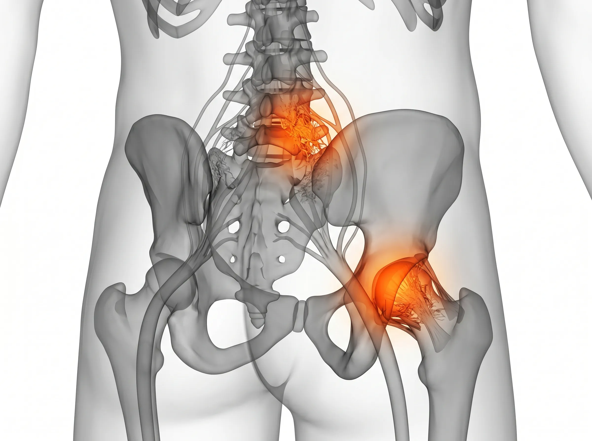

Joint Clinic — Hip
삶의 궤적을 결정하는 중심,
고관절의 안녕이 중요합니다.
이유 모를 엉덩이 통증, 허리 문제만은 아닐 수 있습니다.
수많은 고난도 케이스를 경험한 전문의의 세밀한 진찰로
깊숙이 숨어있는 통증의 시작점을 찾아냅니다.
Clinical Insight : Hip Conditions
어떤 동작에서 불편함을 느끼시나요?
고관절 질환은 통증의 위치와 특정 동작에 따른 반응으로 정밀하게 구별됩니다.
나의 증상과 가장 유사한 사례를 확인해 보세요.
통증유발
양반다리 시
차량 탑승 시
Femoroacetabular Impingement (FAI)
고관절 충돌증후군
대퇴골과 골반 비구가 구조적으로 부딪히며 통증을 유발합니다. 양반다리를 하거나 차에 타고 내릴 때 사타구니 쪽이 찝히는 듯한 날카로운 통증이 특징이며, 오래 앉아 있을수록 사타구니 주변의 뻐근함이 심해집니다.
통증유발
옆으로 누울 때
계단 이용 시
Trochanteric Bursitis
고관절 점액낭염
관절을 보호하는 물주머니(점액낭)에 염증이 생긴 상태입니다. 엉덩이 바깥쪽 돌출된 부위에 통증이 집중되며, 밤에 아픈 쪽으로 누워 자기 힘들고 일어날 때 사타구니가 뻣뻣해지는 증상이 나타납니다.
통증유발
회전 동작 시
방향 전환 시
Acetabular Labral Tear
비구순 파열
관절 연골 테두리인 비구순이 손상된 상태입니다. 고관절을 움직일 때 무언가 걸리는 느낌이나 '뚝' 소리가 나며 통증이 동반됩니다. 특히 운동 중 갑작스러운 방향 전환이나 깊은 회전 시 날카로운 통증을 유발합니다.
Medical Insight

'허리 문제인가, 고관절 문제인가'
정확한 구별이 먼저입니다.
고관절은 두꺼운 근육에 둘러싸여 있어 통증의 원인을 찾기가 매우 까다롭습니다. 허리 디스크와 증상이 비슷해 엉뚱한 치료를 받는 경우도 많습니다. 숙련된 전문의가 직접 관절을 움직여보고 압통점을 찾는 '이학적 검사'가 반드시 선행되어야만 깊은 곳의 유착을 정확히 해결할 수 있습니다.
정확한 원인 감별과
심부 조직 유착 해소
진단의 정확성이 치료의 효율성을 결정합니다. 이학적 검사와 정밀 영상 진단을 병행하여 깊은 곳의 문제를 정확히 짚어냅니다.
Mobility Timeline
신체의 주춧돌이 무너지는 신호
엉덩이 깊은 곳의 통증은 시간이 흐를수록 보행 전체를 위협합니다.
활동 시 통증
장시간 걷거나 운동한 후 엉덩이 깊은 곳이 묵직하고 뻐근한 느낌. 쉬면 나아져서 방치하기 쉬운 초기 단계입니다.
주요 증상
- • 양반다리 동작 시 서혜부(사타구니) 통증
- • 자동차 승하차 시 엉덩이 시큰거림
주요 증상 ⚠
- • 양말 신기 등 고관절 굴곡 동작의 제한
- • 계단을 오를 때 엉덩이 통증 심화
가동 범위 제한
양반다리가 힘들어지고, 양말을 신거나 신발 끈을 묶는 등의 일상적인 동작이 불편해지는 단계입니다.
보행 장애
통증으로 인해 걸음걸이가 절뚝거리게 되며, 사타구니와 옆구리 쪽으로 통증이 방사되는 단계입니다.
주요 증상 ⛔
- • 다리 길이가 다르게 느껴지는 보행 이상
- • 가만히 있어도 지속되는 극심한 야간통
Targeted Solution
삼성365의원 고관절통증 특화 3R Therapy
유착을 풀고, 지지력을 채우고, 보행의 균형을 되찾습니다.

01
Release 이완
고관절 심부의 굳고 유착된 근육과 인대 조직을 정밀 이완하여, 골반 주변의 압박감을 해소하고 가동 범위를 회복합니다.

02
Reinforcement 강화
약해진 고관절 지지 인대와 주변 근육의 재생을 유도하여, 체중 부하를 안정적으로 견딜 수 있는 구조를 만듭니다.

03
Recovery 정상화
틀어진 골반 정렬과 보행 패턴을 정상화하여 요추와 하지로 이어지는 통증의 사슬을 끊고 안정적인 보행을 지원합니다.

"고관절은 우리 몸의 중심축입니다. 정확한 진찰이 수술보다 앞서야 한다는 원칙으로 통증의 원인을 끝까지 찾아내겠습니다."
삼성365의원 대표원장
자주 묻는 질문
허리 디스크와 어떻게 다른가요? ↓
허리 문제는 보통 허리를 숙일 때 아프지만, 고관절 문제는 다리를 올리거나 회전시킬 때 통증이 심해집니다. 또한 고관절 문제는 사타구니, 엉덩이 바깥쪽, 허벅지 앞쪽으로 통증이 퍼지는 경우가 많습니다. 전문의의 감별 진단이 꼭 필요한 이유입니다.
나이가 많아도 비수술 치료가 효과가 있을까요? ↓
네, 고령층일수록 수술에 대한 부담이 큽니다. 3R Therapy는 전신 부담이 적은 비수술적 방법으로, 관절의 기능을 보존하고 보행 능력을 회복하는 데 큰 도움이 됩니다. 실제로 70~80대 환자에서도 유의미한 통증 감소와 기능 개선을 확인하고 있습니다.
고관절 충돌증후군, 운동을 계속해도 되나요? ↓
충돌을 유발하는 동작(과도한 굴곡, 내회전)을 동반한 운동은 일시적으로 제한이 필요합니다. 하지만 수중 걷기, 자전거 등 관절에 부담이 적은 유산소 운동은 오히려 회복에 도움이 됩니다. 치료 중 맞춤 운동 지침을 안내해 드립니다.
비구순이 찢어졌는데 반드시 수술해야 하나요? ↓
파열의 위치, 크기, 증상의 심각도에 따라 다릅니다. 경미한 파열은 비수술적 재생 치료로 충분한 기능 회복이 가능합니다. 주변 조직의 지지력을 강화하여 파열 부위의 스트레스를 줄이는 방향으로 접근하며, 수술은 보존적 치료 후에도 일상 기능이 유지되지 않을 때 검토합니다.